Second week of Aperilex development, focusing on the application layer. Now that this layer is complete, it’s time to review the work done so far and reflect on the process. Fantastic and dream-like experience.
Phase Work Done!
Actually yesterday was the the day I finished implementing the application layer, but i was too excited to see what could be done next, so I didn’t wait for the review and jumped into the next phase, which is the presentation layer building user interface. Having touched the initial UI design and implementation, I had the initial idea of how to build the next phase with Claude Code. Most likely will be React, Typescript, and Tailwind CSS. The decision came from the experiment of rapid prototyping with Claude Code (The layout and pages were already done in fact), but after identifying some of the challenges and limitations, I decided to roll back to the main branch and do a review and reflect before moving on to the next phase. That’s the good thing about working with Claude Code, you can always go back and forth, review and reflect on the work done, and make necessary adjustments before moving on to the next phase, cheap and easy.
Technical Review
Same like last phase, the technical details of the implementation have been documented in the GitHub repo. The biggest technical learning in this phase was definitely the architecture itself. CQRS (Command Query Responsibility Segregation) Pattern -> Command/Query Dispatcher -> Commands and Queries -> Application Services -> Infrastructure Layer. The architecture is designed to be clean, maintainable, and scalable, following the principles of Clean Architecture and Domain-Driven Design. The application layer serves as the bridge between the domain/infrastructure layer and the presentation layer, handling the business logic and coordinating the interactions between different components. Although, of course I am not an expert of everything learned this week, but I have a better understanding of how to design and implement a clean architecture for a software system. This will just be one of the many pattern or design principles to learn in the future and nice to have in your tool bucket.
Working with Claude Code
This is again the core to reflect during this journey. I was thinking to put things together myself but luckily Anthropic has just realeased a COMPREHENSIVE document on how their internal teams using Claude Code which is a GREAT resource for anyone is interested in building with Claude Code even for different teams from data infrastructure to product development, data science and visualization, product design, engineering and more. Everyone can grab a tasty bite from their doc here.
A couple of things just exactly what I have been doing or thinking, and I will continue to do so in the future:
Product Engineering Team
- Treat it as an iterative partner, not a one-shot solution. Rather than expecting Claude to solve problems immediately, approach it as a collaborator you iterate with. This works better than trying to get perfect solutions on the first try.
- Use it for building confidence in unfamiliar areas. Don’t hesitate to tackle bugs or investigate incidents outside your expertise. Claude Code makes it feasible to work independently in areas that would normally require extensive context building.
Data Science Team
- Building JavaScript/TypeScript dashboard apps: Despite knowing “very little JavaScript and TypeScript,” the team uses Claude Code to build entire React applications for visualizing RL model performance and training data. They give Claude control to write full applications from scratch, like a 5,000-line TypeScript app, without needing to understand the code themselves. This is critical because visualization apps are relatively low context and don’t require understanding the entire monorepo, allowing rapid prototyping of tools to understand model performance during training and evaluations.
Latest Diagram of the Architecture

The usual, attached is the latest architecture reflection of Aperilex.